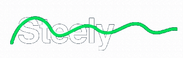

Scanner IA
Fotografe a etiqueta e o modelo é identificado com o grau de confiança. Abaixo de 80%, a pessoa confirma à mão.

O Steely conecta quem tem peças de computador paradas com quem precisa delas. O Scanner IA identifica o componente pelas fotos, a comunidade valida e o pagamento fica em custódia até a entrega.
Comprar peça usada em grupo de mensagem é loteria. No Steely, cada anúncio passa por três filtros antes de chegar até você.
Fotografe a etiqueta e o modelo é identificado com o grau de confiança. Abaixo de 80%, a pessoa confirma à mão.
A comunidade confere se o anúncio corresponde à peça das fotos e ganha moedas por isso.
O valor fica em custódia. A entrega é confirmada por QR Code, mesmo sem internet, e só então é liberado.
Estas são as telas reais do app, as mesmas do Figma. Toque nos botões dentro do celular: o sino, o + do menu e os botões de cada etapa levam para a próxima tela.
Sprint 13 · Home, notificações e criação de anúncio. Como as telas são feitas →